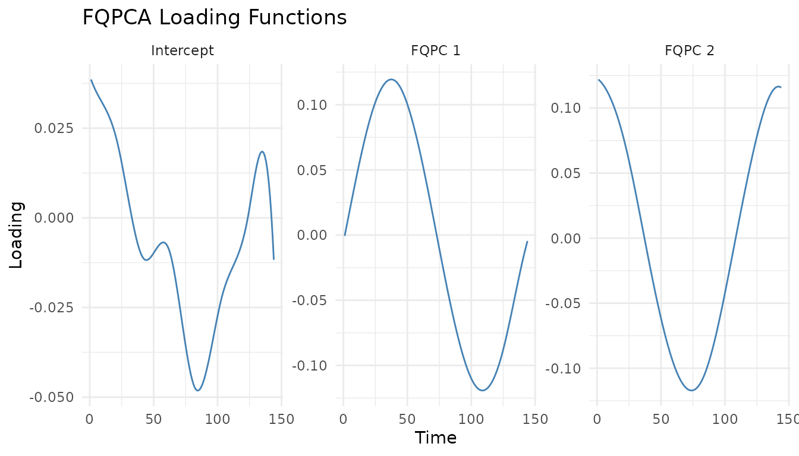

Functional Quantile Principal Component Analysis (FQPCA) is a methodology designed to work with functional data from a quantile perspective. It extends traditional Functional Principal Component Analysis (FPCA) to the quantile regression framework, allowing for a richer understanding of functional data by capturing full curve and time-specific probability distributions.
This guide provides a walk-through on how to use FQPCA inside the
FunQ package, covering:
- Model fitting and prediction.
- Smoothness control (unpenalized vs. penalized).
- Selecting the number of components.
- Parameter tuning using Cross-Validation.
Let’s load the required packages:
1. Core Model Fitting
We begin by generating some synthetic functional data containing missing values.
set.seed(5)
n.obs <- 150
n.time <- 144
Y.axis <- seq(0, 2*pi, length.out = n.time)
# Define PC functions
pc1 <- sin(Y.axis)
pc2 <- cos(Y.axis)
# Generate individual score coefficients
c1.vals <- rnorm(n.obs, mean=0, sd=1)
c2.vals <- rnorm(n.obs, mean=0, sd=0.8)
# Construct functional data matrix
Y <- c1.vals %*% t(pc1) + c2.vals %*% t(pc2)
# Add noise and some random missing observations (20%)
Y <- Y + matrix(rnorm(n.obs * n.time, mean=0, sd=0.4), nrow = n.obs)
Y[sample(n.obs * n.time, as.integer(0.2 * n.obs * n.time))] <- NAWe fit an FQPCA model at the median () with 2 components:
# Fit FQPCA model
model_fqpca <- fqpca(
data = Y,
npc = 2,
quantile.value = 0.5,
periodic = FALSE,
splines.df = 10,
seed = 5,
verbose = FALSE
)
# Access model components
intercept <- model_fqpca$intercept
loadings <- model_fqpca$loadings
scores <- model_fqpca$scoresFitted Values and Predictions
To reconstruct the curves or compute fitted values, use the S3 method
fitted():
# Reconstruct training curves using all components
Y.fitted <- fitted(model_fqpca)
# Reconstruct curves to achieve 95% proportion of variance explained (PVE)
Y.fitted.95 <- fitted(model_fqpca, pve = 0.95)To predict score coordinates for new unseen curves, use
predict():
# Generate new data
Y.new <- Y[1:10, ]
# Predict scores for new data
new_scores <- predict(model_fqpca, newdata = Y.new)2. Smoothness Control
The package provides two methods to control the smoothness of the estimated loading functions:
-
Spline Degrees of Freedom: Set directly using the
splines.dfargument. -
Second Derivative Penalty (Experimental): Set
penalized = TRUEand supply a positivelambda.ridgevalue. This is solved using theconquerpackage.
# Fit using a second-derivative ridge penalty
model_penalized <- fqpca(
data = Y,
npc = 2,
quantile.value = 0.5,
penalized = TRUE,
lambda.ridge = 1e-4,
splines.method = "conquer",
periodic = FALSE,
seed = 5
)3. Selecting Components via Explained Variability
We can compute the percentage of explained variability (PVE) for each component.
# View PVE per component
model_fqpca$pve
#> [1] 0.6233829 0.3766171
# View cumulative PVE
cumsum(model_fqpca$pve)
#> [1] 0.6233829 1.0000000Visualizing the loading functions using the package’s generic
plot method:
# Plot loadings for components explaining up to 99% variance
plot(model_fqpca, pve = 0.99) +
theme_minimal() +
ggtitle("FQPCA Loading Functions")
4. Parameter Tuning (Cross-Validation)
We can tune the degrees of freedom (splines.df) or the
penalty hyperparameter (lambda.ridge) using k-fold
cross-validation.
Cross-Validation of Splines Degrees of Freedom
We can evaluate a grid of splines.df values and measure
prediction error using quantile_error():
df_grid <- c(5, 8, 12)
# Run CV for df
cv_df <- fqpca_cv_df(
data = Y,
splines.df.grid = df_grid,
n.folds = 3,
criteria = "points",
periodic = FALSE,
seed = 5,
verbose.cv = FALSE
)
# Mean error matrix
cv_df$error.matrix
#> Fold 1 Fold 2 Fold 3
#> [1,] 0.1666141 0.1656331 0.1665625
#> [2,] 0.1645947 0.1633414 0.1639917
#> [3,] 0.1647238 0.1634190 0.1640008
# Find the best df
optimal_df <- df_grid[which.min(rowMeans(cv_df$error.matrix))]
message("Optimal Degrees of Freedom: ", optimal_df)
#> Optimal Degrees of Freedom: 8Cross-Validation of Penalization parameter Lambda
Similarly, when using penalized splines, we can evaluate a grid of ridge penalty parameters:
lambda_grid <- c(0, 1e-5, 1e-3)
# Run CV for lambda
cv_lambda <- fqpca_cv_lambda(
data = Y,
lambda.grid = lambda_grid,
n.folds = 3,
criteria = "points",
periodic = FALSE,
seed = 5,
verbose.cv = FALSE
)
# Error matrix
cv_lambda$error.matrix
#> Fold 1 Fold 2 Fold 3
#> [1,] 0.1646853 0.1633307 0.1639331
#> [2,] 0.1646761 0.1633252 0.1639382
#> [3,] 0.1646907 0.1633282 0.1639317
# Find the best lambda
optimal_lambda <- lambda_grid[which.min(rowMeans(cv_lambda$error.matrix))]
message("Optimal Lambda: ", optimal_lambda)
#> Optimal Lambda: 1e-05References
- Álvaro Méndez-Civieta, Ying Wei, Keith M Diaz, Jeff Goldsmith. (2025). Functional quantile principal component analysis. Biostatistics, 26(1), kxae040. DOI: 10.1093/biostatistics/kxae040